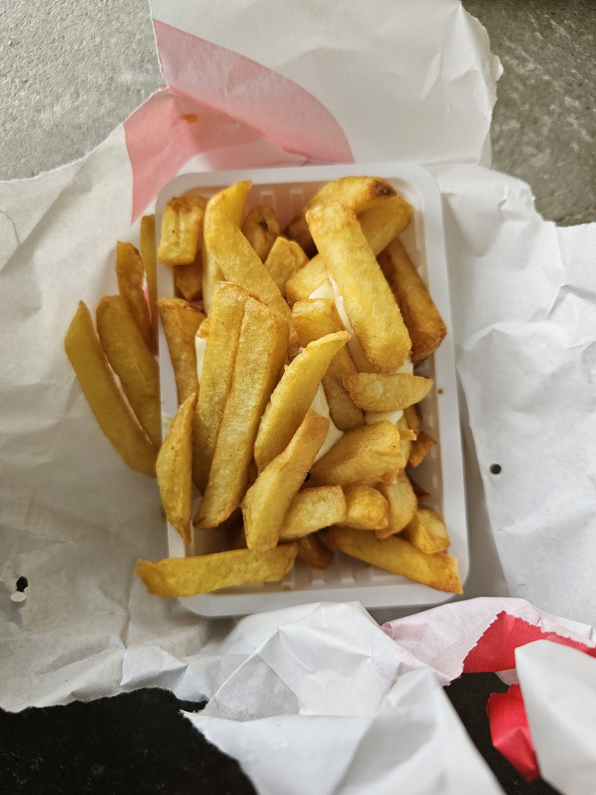

Een frietje halen bij het gemeentehuis
Friet, snacks en frisdrank uit onze frietwagen, vier dagen per week op het voorplein van het gemeentehuis in Zevenbergen.
Wat we bakken
Even snel iets halen voor de lunch of het avondeten.
Friet
Vers uit de frituur, in een bakje om mee te nemen.
Snacks
Bij de friet of los, om mee te nemen.
Frisdrank
Koud, voor erbij.
Wanneer staan we er?
Elke week op vaste dagen, op het voorplein van het gemeentehuis.
Dinsdag
11.00 - 18.15
Woensdag
11.00 - 18.15
Vrijdag
11.00 - 19.00
Zondag
16.00 - 19.00
Op maandag, donderdag en zaterdag staat de wagen er niet.
Al jaren de frietwagen van Zevenbergen
Jarenlang stond de frietwagen van Jan Maas op de Zuidhaven. Toen de haven werd opengegraven, moest de wagen daar weg.
Sinds juni 2019 staan we op het voorplein van het gemeentehuis aan de Pastoor van Kessellaan. Een vaste plek, met vaste dagen, midden in Zevenbergen.
Kom langs bij de wagen
J. Maas Frituur
Voorplein gemeentehuis
Pastoor van Kessellaan 15
4761 BJ Zevenbergen
Telefoon: 06 50 56 51 82
Waar staat de wagen?
Op het voorplein van het gemeentehuis aan de Pastoor van Kessellaan, op dinsdag, woensdag, vrijdag en zondag.